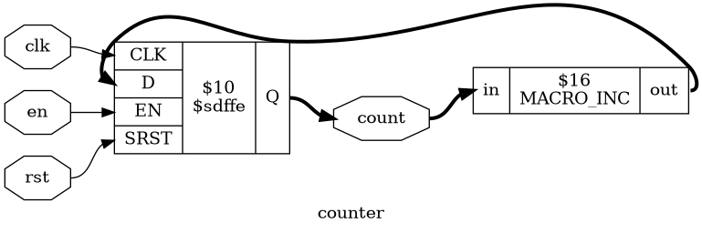

Screenshots
This page contains examples of simple Yosys Synthesis Scripts and screenshots
of the "show" commands output for the synthesised designs. (The "show" command
is using
GraphViz to generate schematics.)
Simple RTL Netlist
# read design
read_verilog counter.v
hierarchy -check
# high-level synthesis
proc; opt; fsm; opt; memory; opt
module counter (clk, rst, en, count);
input clk, rst, en;
output reg [3:0] count;
always @(posedge clk)
if (rst)
count <= 4'd0;
else if (en)
count <= count + 4'd1;
endmodule
CMOS Gate-Level Netlist
# read design
read_verilog counter.v
hierarchy -check
# high-level synthesis
proc; opt; fsm; opt; memory; opt
# low-level synthesis
techmap; opt
# map to target architecture
dfflibmap -liberty cmos_cells.lib
abc -liberty cmos_cells.lib
# split larger signals
splitnets -ports; opt
library(demo) {
cell(NOT) {
area: 3;
pin(A) { direction: input; }
pin(Y) { direction: output;
function: "A'"; }
}
cell(BUF) {
area: 6;
pin(A) { direction: input; }
pin(Y) { direction: output;
function: "A"; }
}
cell(NAND) {
area: 4;
pin(A) { direction: input; }
pin(B) { direction: input; }
pin(Y) { direction: output;
function: "(A*B)'"; }
}
cell(NOR) {
area: 4;
pin(A) { direction: input; }
pin(B) { direction: input; }
pin(Y) { direction: output;
function: "(A+B)'"; }
}
cell(DFF) {
area: 18;
ff(IQ, IQN) { clocked_on: C;
next_state: D; }
pin(C) { direction: input;
clock: true; }
pin(D) { direction: input; }
pin(Q) { direction: output;
function: "IQ"; }
}
}
Coarse-Grain Netlist

# read design
read_verilog counter.v
hierarchy -check
# high-level synthesis
proc; opt; fsm; opt; memory; opt
# mapping coarse-grain cells
extract -map coarse_cells.v
module MACRO_INC(in, out);
input [3:0] in;
output [3:0] out;
assign out = in + 4'd1;
endmodule
module MACRO_DFF(clk, rst, en, d, q);
input clk, rst, en;
input [3:0] d;
output reg [3:0] q;
always @(posedge clk)
q <= rst ? 4'd0 : en ? d : q;
endmodule